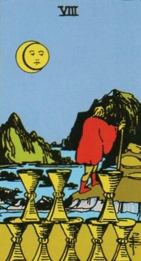
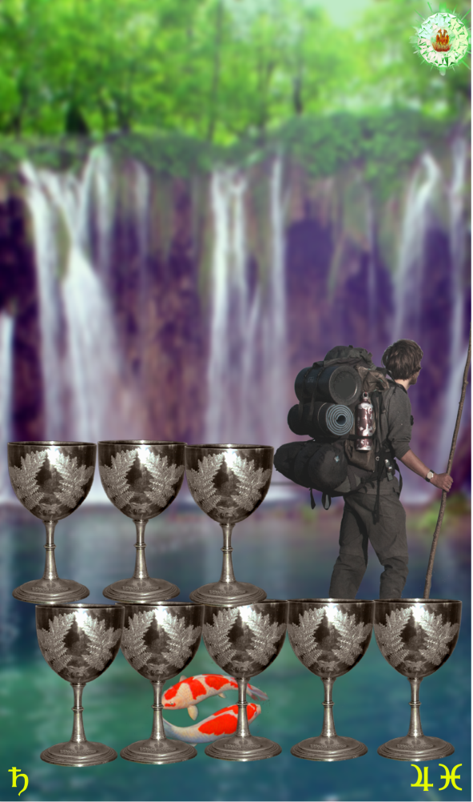
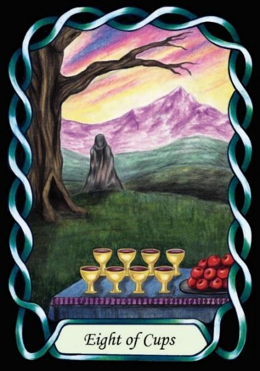

Eight Of Cups



Sign |
|
Twelve: unseen realms |
|
Sign Ruler |
|
Element |
Water: emotions |
Modality |
|
Symbol |
Fish |
Decan |
|
Decan Ruler |
|
Time |
Feb 19 - 29 |
Spiritual Pisces I
An Apprentice of the unseen realm, ruled by Saturn and Jupiter, is dissatisfied with the pleasures and problems of the material world and turns away, to seek the unseen world instead. This is the initiation of the Apprentice onto the spiritual path.
By comparison, the Seven of Cups was the alure of the seven natures of the seven astrological governors. This next stage indicates a step up in wisdom as the material is left behind, and wisdom is achieved near the end of the earthly existence, in the Water nature of Pisces, which is less about struggle, and more about finding the path of least resistance, like Water finding its way downhill.
Goldschneider Personology
These Pisces have an attraction to the spiritual side of life, lending Piscesn general a reputation for being the most spiritually advanced sign of the zodiac. They also relate to art, including performance art and music. They have a good understanding of the concept of Water, which lends them an understanding of flow, diversion, and non-opposition. Their detachment from the material world affords them a strong measure of resilience.
RWS Imagery
A person turns away from the emotion-based pleasures of life to follow a path to something less material.
Pymander Imagery
Same as RWS, turning away from the physical/emotional pleasures of the Seven of Cups, looking for a greater eighth cup.
Summary
Represents spiritual awakening, disillusionment with material pursuits, and seeking the unknown.